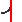

The line from Bellbird Junction to Cessnock No 1 Colliery was built by the Great Northern Coal Company. The branch off this line to Stanford Main No 2 was build by the East Greta Coal Mine Company. The line to Maitland Main colliery was built by the Gretamain Colliery Company. The branch to Millfield Greta Colliery was built by R.W. Miller and Company.
All branches have been lifted and the collieries they served closed.
| km | Name | Facility | Status | Opened | Closed | Location | Photos | Diagrams | |||||||||
|---|---|---|---|---|---|---|---|---|---|---|---|---|---|---|---|---|---|
| 0.00 | | Bellbird Junction | Junction | Closed | - | - | 217.220 | 2 | 1 | ||||||||
| 3.13 | | Cessnock No 2 Colliery | Colliery | Unknown | unknown | unknown | 220.350 | - | - | ||||||||
| 7.92 | Kalingo Junction | Junction | Closed | - | - | 225.140 | 3 | - | |||||||||
| 10.64 | | Cessnock No 1 Colliery | Colliery | Unknown | unknown | unknown | 227.860 | - | - | ||||||||
| 0.00 | Kalingo Junction | Junction | Closed | - | - | 225.140 | 3 | - | |||||||||
| 3.18 | Maitland Main Junction | Junction | Closed | - | - | 228.320 | 4 | - | |||||||||
| 4.69 | | Stanford Main No 2 Colliery | Colliery | Unknown | unknown | unknown | 229.830 | 1 | - | ||||||||
| 0.00 | Maitland Main Junction | Junction | Closed | - | - | 228.320 | 4 | - | |||||||||
| 1.27 |  | Millfield Greta Junction | Junction | Closed | - | - | 229.590 | - | - | ||||||||
| 1.81 | | Maitland Main Colliery | Colliery | Unknown | unknown | unknown | 230.130 | - | - | ||||||||
| 0.00 | Millfield Greta Junction | Junction | Closed | - | - | 229.590 | - | - | |||||||||
| 0.74 | Millfield Greta Colliery | Colliery | Unknown | unknown | unknown | 230.330 | - | - |